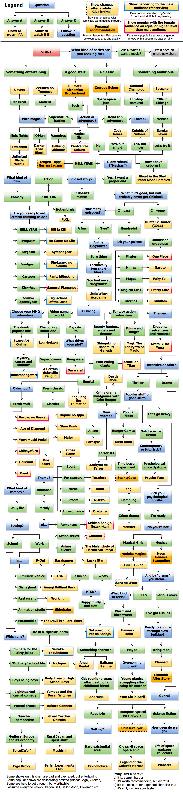

IMG_20190831_142940_509.jpg


Extracted names
- A Certain Scientific Railgun
- Ace of Diamond
- Amagi Brilliant Park
- Angel Beats!
- Anohana — The Flower We Saw That Day
- Aria
- Attack on Titan
- Baccano!
- Bakemonogatari
- Barakamon
- Blast of Tempest
- Cardcaptor Sakura
- Chihayafuru
- Clannad
- Clannad — After Story
- Code Geass
- Cowboy Bebop
- Cross Game
- Daily Lives of High School Boys
- Darker than Black
- Death Note
- Durarara!!
- Ergo Proxy
- Eureka Seven
- Fairy Tail
- Fate-Stay Night — Unlimited Blade Works
- Fate-Zero
- Food Wars! — Shokugeki no Soma
- Free!
- From the New World
- Fullmetal Alchemist — Brotherhood
- Ghost in the Shell — Stand Alone Complex
- Gintama
- Great Teacher Onizuka
- Gundam Series
- Haibane Renmei
- Haikyu!!
- Hajime no Ippo
- Hanasaku Iroha
- Hellsing Ultimate
- Highschool of the Dead
- Hunter × Hunter
- K-On!
- Kill la Kill
- Knights of Sidonia
- Kokoro Connect
- Kuroko’s Basketball
- Legend of the Galactic Heroes
- Little Witch Academia
- Log Horizon
- Lucky Star
- Magi — The Labyrinth of Magic
- Major
- Monster
- Monthly Girls’ Nozaki-kun
- My Teen Romantic Comedy SNAFU
- Nana
- Naruto
- Neon Genesis Evangelion
- Nichijou
- Nisekoi
- No Game No Life
- One Piece
- Panty & Stocking with Garterbelt
- Parasyte
- Ping Pong the Animation
- Planetes
- Pretty Cure
- Psycho-Pass
- Puella Magi Madoka Magica
- Rage of Bahamut — Genesis
- Samurai Champloo
- Samurai Flamenco
- Seitokai Yakuindomo
- Serial Experiments Lain
- Shirobako
- Slam Dunk
- Slayers
- Sound of the Sky
- Steins-Gate
- Sword Art Online
- Symphogear
- Tengen Toppa Gurren Lagann
- Texhnolyze
- The Devil Is a Part-Timer!
- The Future Diary
- The Melancholy of Haruhi Suzumiya
- The Pet Girl of Sakurasou
- Toradora!
- Working!!
- X-Men
- Yamada-kun and the Seven Witches
- Yona of the Dawn
- Your Lie in April
- Yowamushi Pedal
- Yuki Yuna Is a Hero
Needs review
Dense flowchart: OCR can miss small labels; excluded footer examples and general genre labels. Full chart remains the source for final checking.
OCR transcription
Machine transcription for checking; spelling and reading order can be wrong.
Legend
Answer A
Show to
watch if A
Question
Answer B
Show to
watch if B
START
Answer C
Followup
question
Show changes
after a while.
Give it time
Slow start or a plot twist.
Definitely worth getting through.
Personal
recommendation
My own favourites. Fair balance
between popularity and quality.
Show pandering to the male
audience (fanservice)
Data from: observation, tag 'lecchi".
Expect lewd stuff, but only teasing.
Show popular with the female
audience on equal or higher level
than male audience
Data from: popularity surveys by gender.
Shows with a good male cast or "girlf'.
What kind of series are
you looking for?
Series? What if I
want a movie?
We'd need an
entire new chart
Something entertaining
A good start
Fullmetal
Alchemist:
Brotherhood
Both
A classic
Cowboy Bebop
Space opera
Something ambitious
Slayers
Classical
Zetsuen no
Tempest
Modern
With magic?
Epic fights
Fate/ zero
Unlimited
Biade
Works
What kind of
Comedy
X-Men
Darker
Than
Black
Supernatural
battles
Vampires
Hellsing
Ultimate
No.
Tengen Toppa
Gurren Lagann I
Action
PURE FUN
Action or
adventure?
Magical
irl
rdcaptor
Sakura
HELL YEAH!
Closed story?
lt doesn't
matter
jazz
Road trip
adventure
Code
Geass
Yes, but
smart
Giant robots?
("Mechas")
Yes, I want a
proper end
Samurai
Champloo
Hip-hop
samurai
Theme?
Knights of
Sidonia
Yes, but
new
Baccano!
'30s in
Chicago
Mechas
Eureka
Seven
Let's try it
How about
cyborgs?
Ghost in the Shell:
Stand Alone Complex
What if it's good, but will
probably never get finished?
Not entirely
Kili la Kili
No Game No Life
Symphogear
Shokugeki no
Souma
Panty&Stocking
Samurai Flamenco
Highschool
of the Dead
Video game
world
How many
episodes?
Are you ready to set
critical thinking aside?
HELL YEAH
Eyegasm
Eargasm
Foodgasm
Cartoon
Kick-Ass
Zombie
apocalypse
Choose your MMO
A few
...Two?
Anime
Hogwarts?
Sure thing
Technically
two short
You had me at
"Hogwarts"
Little Witch
Academia
Surviving:
l'Il pass
Hundreds!
Pick your poison:
Pirates
Ninjas
Mages
Magical Girls
Mechas
Fantasy action
adventure
adventure:
The dumb
popular one
Sword Art
Online
Mystery,
curses and
romance
Bakemonogatari
Oldschool?
Fresh stuff
The boring
smart one
Log Horizon
Superpowers
A Certain
Scientific
Rail un
Fresh classic
Classics
Big city
life
What drives
ur plot?
Gang wars
Durarara!
Bounty hunters,
angels and
demons
Shingeki no
Bahamut:
Genesis
Man-eating
giants
Death
Note
Djinns and
mages
Magi: The
Labirynth of
Magic
Attack on
Titan
Thriller
l'Il weep
Hunter x Hunter
(2011)
Unfinished
greatness
One Piece
Naruto
Fairy Tail
Pretty Cure
Gundam
Themes:
Dragons,
adventure
and romance
Akatsuki no
Yona
Intensive or calm?
Drama
Sports!
Ping Pong
the
Animation
Crime drama
Popular stuff or
indgames with
Grim Reaper
Main
theme?
good stuff?
Popular
flicks
Hajime no Ippo
Slam Dunk
Major
Cross
Game
Sport
For starters
Music
Sitcom
Anti-romance
Romances
Action series
Anime
cliches
Barakamon
Let's go heavy
Kuroko no Basket
Ace of Diamond
Yowamushi Pedal
Chihayafuru
One
Haikyuu!
Aliens
Parasyte
Hunger Games
Mirai Nikki
Free!
What kind of
comedy?
Daily life
Setting?
School
in...
Outs
Theme?
Romance
Parody
of...
Work
K-On!
Terrorists
Toradora!
Nana
Nisekoi
Oregairu
Gekkan Shoujo
Nozaki-kun
Gintama
The Melancholy of
Haruhi Suzumiya
Lucky Star
Time travel
experiment
Steins;Gate
Gambling
Crime drama
Monster
Solid science
fiction
Contemporary
or futuristic?
Psychological
police dystopia
Psycho-Pass
Pick your
psychological
thriller
I'm ready
No you're not
Magical Girls
Madoka Magica
Yuuki Yuuna
Mechas
Neon
Genesis
Evangelion
Futuristic Venice
Aria
Jesus no
...what?
And by "drama"
ou mean...
Disneyland
Restaurant
Amagi Brilliant Park
PTSD?
Working!
Happy, fluffy
and cute
Animation studio
Shirobako
Sora no Woto
What kind
of feels?
Warm and
bittersweet
FEELS
Serious story
McDonald's
The Devil is a Part-Timer
Life in a "special" dorm
Which one?
I'm here for the
dirty jokes
"Ordinary" school life
Sakurasou no
Pet na Kanojo
Something shorter?
Seitokai
Yakuindomo
Nichijou
Angel
Beats!
Haibane
Renmei
Hanasaku
Iroha
Maybe
Overcoming
grief?
I've got tissues
Ready to endure
through slow
buildup?
Bring it on
Clannad
Clannad:
Boys being boys
Lighthearted
casual comedy
Forced drama
Teacher
perspective
Medieval Europe
and its economy
Ergo Proxy
Daily Lives of High
School Boys
Yamada and the
Seven Witches
Kokoro Connect
Great Teacher
Onizuka
Rural Japan and
spirit stuff
Serial Experiments
Lain
Kids reuniting years
after death of a
childhood friend
AnoHana
Road trip
Setting?
Hard existential
sci-fi
Texnoholyze
Young pianist
struggling after
losing his mother
Your Lie in April
Postapocalyptical
rural utopia
Shinsekai yori
Old sci-fi space
opera epic
Legend of the
Galactic Heroes
"Why isn't X here?"
a) lt is, search harder
After Story
Genre?
Science fiction
How deep do we
Life of space
garbage
collectors
Planetes
Some shows on this chart are bad and overrated, but entertaining
Some popular shows are deliberately omitted (Bleach, AgK, Orelmo)
Some are hard to get through, but worthwhile
I assume everyone knows Dragon Ball, Sailor Moon, Pokemon etc.
b) lt's worth recommending, but didnt fit
c) lt's too obscure for a general chart like that
d) lt's shit, just like your taste